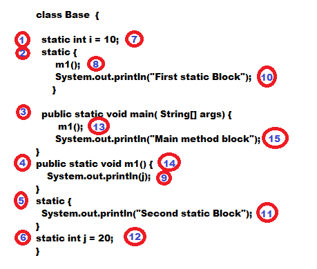
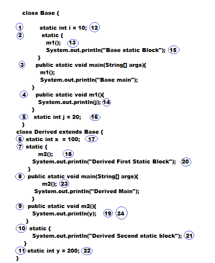

Static Control Flow :
- Whenever we are executing a java class the following is the sequence of events will be performed automatically .
- 1. Identification of static members from top to bottom .
- 2. Execution of static variable assignments and static blocks from top to bottom .
- 3. Execution of main method .

Read Indirectly Write Only State:
- If a variable is in RIWO(Read Indirectly Write Only State) we can not perform read operation directly. Otherwise we will get compile time error saying
"Illegal forward reference"
static control flow in parent and child relationship :
- Whenever we are trying to execute child class the following sequence of events will be executed automatically .
- Execution of static variable assignments and static blocks from top bottom and parent to child .
- Execution of only child class main() method .

static block:
- static blocks will be executed at the time of class loading . Hence while loading a java class if we want to perform any activity
we have to define that inside static block .
- We can define multiple static blocks within the same class and all these static blocks will be executed from top to bottom .
Without using main() is it possible to print some statements to the console ?
Without using main() method and static block is it possible to print some statements to the console ?
Without using System.out.println() is it possible to print some statements to the console ?
- Answer: Yes , By using System.err.println()